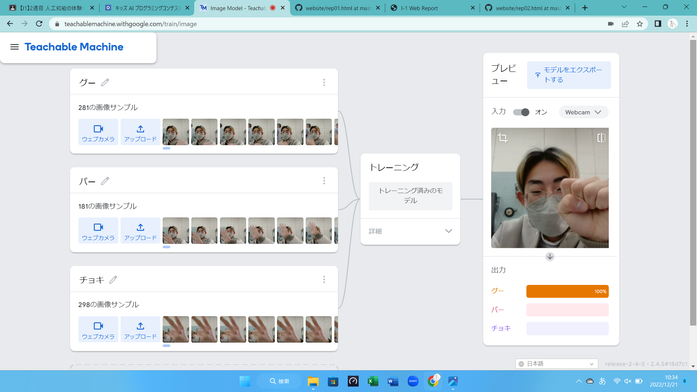

第2週目
2-1 １週目のレポートをHTMLで作る
１週目のレポート
1.内容
pngファイルをアップロードしてホームページに表示されるようにした。
2.感想
ファイル名を指定して同じ名前の写真データをアップするだけで、簡単に表示させれることがすごいと思った。
2-2 機械学習体験

1.内容
webカメラを使用してグーチョキパーを判別できるようにした。
2.感想
顔が映っている時をサンプルとしてとってしまったため、顔が映っていないときに判別の精度が下がってしまった。
けど思っていたよりちゃんと判別できていて、こんなに手軽にできるのが驚きだった。
2-3 VR（バーチャルリアリティー：Virtual Reality）の体験
1.内容
VR内での会議を行いVRでできることを体験した。
2.感想
周りををも渡したら、もんなのアバターがおり、正面のモニターにみんなが落書きしているのが面白かった。
自分が考えていることの共有が簡単なので、今はビデオ会議などが主流だけど、VRの普及率が上がるにつれてVR会議が主流になて行くのかなと思った。